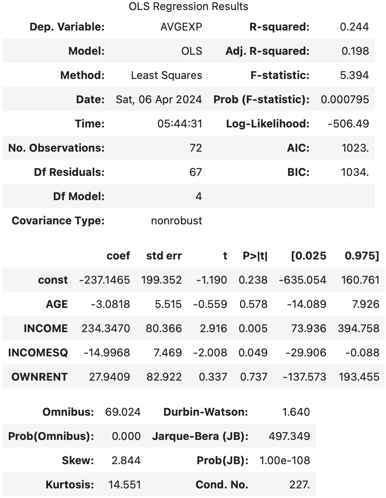
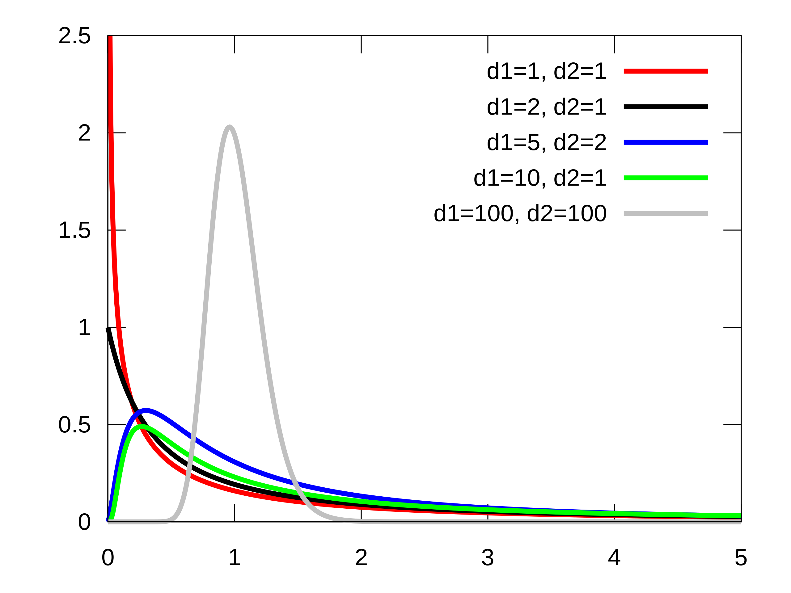

Interpret OLS Regression Result
OLS (ordinary least square) 是一种基础的线性回归方法。本文的 “OLS result” 特指使用 statsmodels.api.OLS 得到的结果。
import statsmodels.api as sm
data = sm.datasets.ccard.load_pandas()
X, y = data.exog.copy(), data.endog.copy()
X = sm.add_constant(X)
res = sm.OLS(y, X).fit()
res.summary()
运行以上代码可以得到一个表格：

表格里是评估模型有效性的指标，但是解读起来需要一定的统计基础。本文将逐个解读其含义以及背后的统计学基础知识。
该表格分为了三个子表格，分别表达：
- 评估模型显著性
- 评估单个模型参数显著性
- 评估模型偏差
我们将逐个表格讲解。但是，在此之前，我们需要了解计算这些统计量涉及到的一些非常容易混淆的概念，即各种 "Sum of Squares"
Sum of Squares in Regression
| Name | Variable Name | Formula | Description |
|---|---|---|---|
| Explained Sum of Squares, ESS | ess |
\(\sum_{i=1}^{n} (\hat{y_i} - \bar{y})^2\) | 预测值偏离均值的距离平方和，越高模型越好 |
| Residual Sum of Squares, RSS | ssr |
\(\sum_{i=1}^{n} (\hat{y_i} - y_i)^2\) | 模型不能解释的残差平方和，越低模型越好 |
| Total Sum of Squares, TSS | centered_tss |
\(\sum_{i=1}^{n} (y_i - \bar{y} )^2\) | 样本值偏离均值的距离平方和，与模型无关 |
他们三者满足关系：
TSS = ESS + RSS
其意义是，样本的 variance 可以被分成两部分， ESS 是用模型解释的 variance，RSS 是用噪声解释的 variance。本质上，一个好模型我们希望模型能解释的 variance 越多越好。
Proof can be found here: Partition of sums of squares.
Table 1: Model Overview
跳过简单的字段。
Df (Degree of freedom)
自由度是一个基础概念，在回归问题中，如果模型自由度=样本数，那么该回归问题退化到一个解方程的问题。因此我们一般希望有较高的 Df Residuals。自由度满足：
No. Observations = Df Residuals + Df Model
注意，当我们添加常数项，即：
因为常数项同样需要估计（也可以看作模型的一部分），该公式变为：
No. Observations = Df Residuals + Df Model + 1
R-squared
R-squared 描述该模型对样本输入的拟合度。在本例中，其值为 0.244，即 24.4% 的变化可以被该模型解释。 它定义为：
即，1 减去（模型误差平方和/以均值为预测值的误差平方和）。
可以通过这个代码检查，算出来 R-squared 是0.24357791682194052，与表格相同。
直观来看，如果模型越准确，则 R-squared 值越接近 1.0。如果直接取样本输出的平均值为预测值，则 R-squared 为 0.0。如果模型甚至不如直接取样本的平均值准确，则 R-squared 可以为负值。
似乎，R-squared 越大，拟合效果越好。但是我们忽略了一个重要的因素，即上面提到的“自由度”。 只要我们往模型中增加参数，必然可以增加 R-squared，直到模型自由度与样本数相同，最终 R-squared = 1.0。但是这样得到的并不是一个有效的模型，而是存在明显的过拟合。
因此，我们需要引入 Adjusted R-squared。
Adj. R-squared
Adjusted R-squared 只会在新加入的模型变量有助于提高模型拟合度时增加，加入一个与结果无关的变量会降低它的数值。
它定义为：
其中 p 是模型参数数量。
可以通过这个代码检查，算出来 Adj. R-squared 是0.1984183894680266，与表格相同。
根据公式，有两个推论：
- Adj. R-squared 可以为负
- Adj. R-squared <= R-squared
F-statistic
F-statistic 衡量模型整体的显著性（后面要讲到的 t-statistic 是衡量单个模型参数的显著性）。
F-distribution 定义为两个 variance 的比值的分布：
其中 \(S_1\) 服从自由度为 \(df_1\) 的 chi-squared 分布，\(S_2\) 服从自由度为 \(df_2\) 的 chi-squared 分布。

我们的原假设是：模型所有参数为 0。即，该模型是无效的，模型可以解释的 variance，即 ESS 是 0。我们分别用 ESS 和 RSS 代入分子和分母，得到：
即，F-value 越大，模型对比噪声越显著。
可以通过这个代码检查，算出来 F-value 是5.393721570932906，与表格相同。
Prob(F-statistic)
F-distribution 由两个自由度的值确定，代入 F-statistic 可以得出其 p-value，就是这里的 Prob(F-statistic)。这个 p-value 的含义是原假设（模型所有参数为 0 ）成立情况下，出现当前结果的概率。它的 值越小，越容易拒绝原假设，即说明这个模型越显著。
AIC and BIC
It stands for Akaike’s Information Criteria and is used for model selection. It penalizes the errors mode in case a new variable is added to the regression equation. It is calculated as number of parameters minus the likelihood of the overall model. A lower AIC implies a better model. Whereas, BIC stands for Bayesian information criteria and is a variant of AIC where penalties are made more severe.
Table 2: Model Parameter
这个表格主要是逐个参数的分析。
Coef & std err
Coef 一列即模型参数的估计值。对于 OLS 这样的线性模型，这个值表明其对应变量 X_i 的每个单位贡献多少的 y。
std err表示该参数估计的不确定性。
t
t 列表示 t-statistic 的值。这里的 t 是指“学生分布”。引入它是为了在不知道 总体均值，也不知道 总体方差 的情况下，检查 两个总体是否有显著不同。
学生分布是用于描述 样本均值 的分布。假设总体 x 符合正态分布 \(N(\mu, \sigma^2)\) （均值方差都是未知）。我们采 n 个样本：
其中 \(\bar{x}\) 是对 \(\mu\) 的无偏估计，\(s^2\) 是对 \(\sigma^2\) 的无偏估计。我们 将样本均值标准化，它应该符合 自由度为 n-1 的 t 分布：
注意，我们并不知道真实的 \(\mu\)，此处的 \(\mu_0\) 正是我们的 原假设：该总体的均值为 \(\mu_0\)。这个计算出来的 t-value 代入 t 分布中就能知道 p-value：

回到我们的表格中，因为我们检验的 原假设是参数无效，因此 \(\mu_0 = 0\)。coef 即参数的均值，std err 是 coef 的标准差，即 均值的标准差，他们直接相除就是 t-statistic：
执行这个命令即可以算出表格中的 t-values。
P > |t|
这是上面算出来的 t-values 对应的 p-values。将以上 t-values 代入自由度为 n-1 的 t 分布上即可获得 p-values。与 Prob (F-statistic) 类似，p-value 越小说明对应的参数越显著。